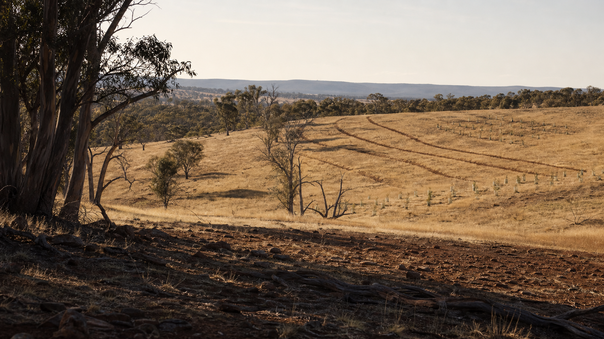

Landscape Regeneration Assessment
Includes desktop review, aerial imagery assessment, site visit, landform observations, water movement assessment, vegetation opportunities, constraints, concept recommendations and PDF report.

Core service
A paid assessment service for rural properties across Central Victoria.
The assessment combines site observation, aerial imagery, mapping, landform interpretation and practical implementation knowledge to identify opportunities for landscape improvement and regeneration.
Before quoting works
The assessment is the product. It helps decide whether the next step is Keyline ripping, shelterbelt establishment, revegetation, erosion repair, staged planting, or a broader property-scale plan.
Planning to works
Includes desktop review, aerial imagery assessment, site visit, landform observations, water movement assessment, vegetation opportunities, constraints, concept recommendations and PDF report.
Includes detailed mapping, Keyline recommendations, planting zones, shelterbelt layout, implementation staging, budget planning and project sequencing.
Includes slashing, ripping, revegetation, tree planting, fencing coordination and ongoing works.
Assessment Options
$650
Aerial imagery review, mapping review, opportunities and constraints summary, preliminary recommendations.
Most Popular
$1,450
Desktop assessment, site visit, landscape analysis, concept regeneration recommendations, PDF report and indicative implementation budgets.
From $2,950
Property assessment, detailed planning, Keyline recommendations, staging, budget planning and project sequencing.
Final pricing depends on travel, project complexity and report scope.
Report deliverables
Location context, access, landholder goals, land use and practical constraints.
Landform, water movement, exposure, vegetation patterns, erosion risks and soil limitations.
Clear first steps and what can wait until conditions, budget or staging allow.
Indicative implementation options for low, staged and more comprehensive works.
Mapped recommendations for planting zones, water flow, shelterbelts, access and project sequencing.
Sample report
The Landscape Regeneration Assessment provides practical, property-specific recommendations that can guide implementation over months or years.
Download Sample Report